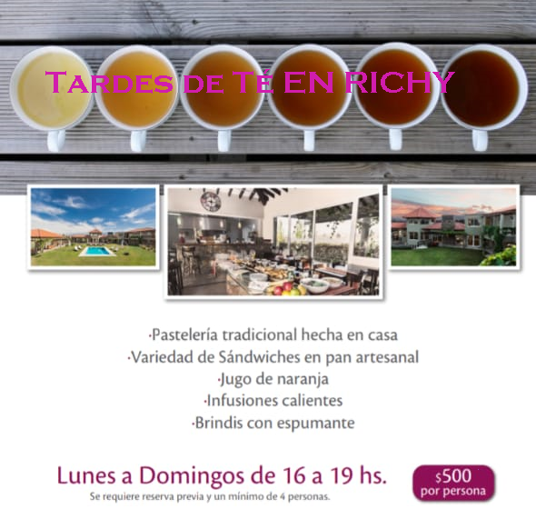
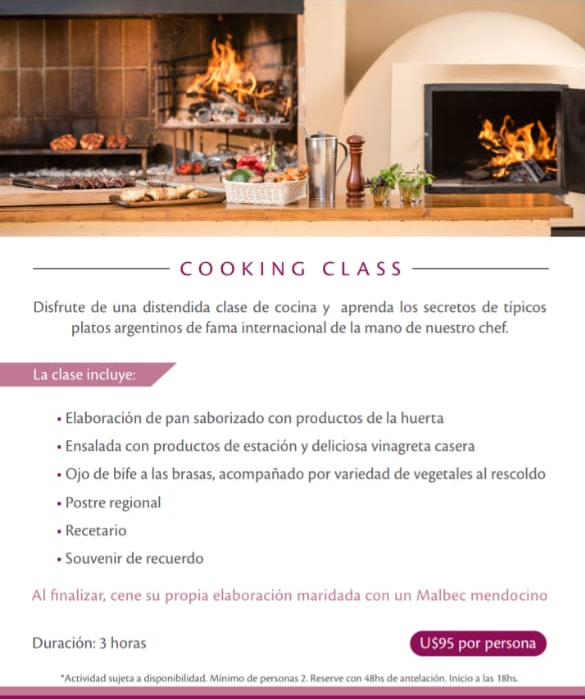
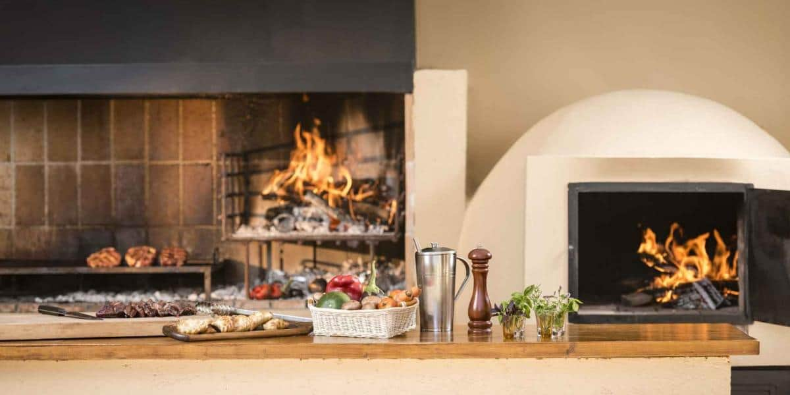
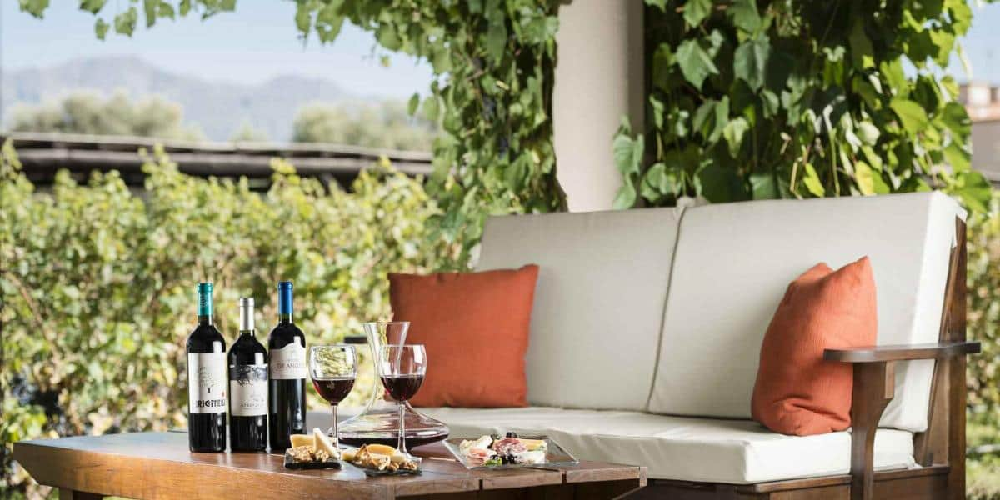
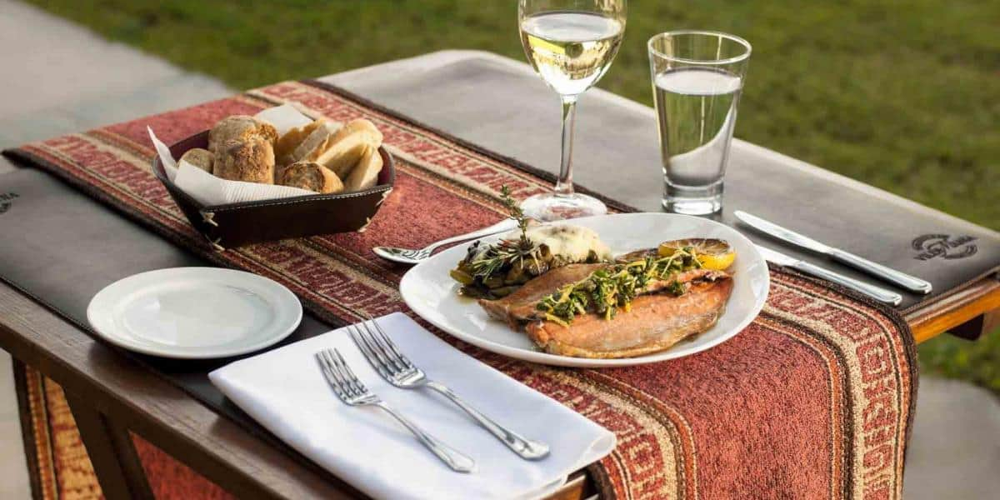
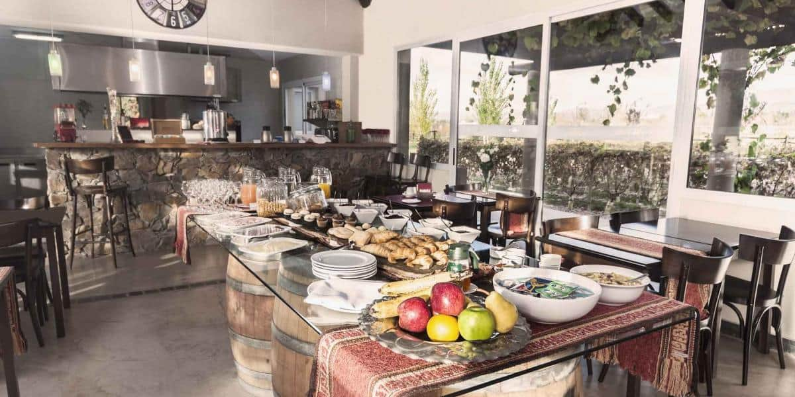
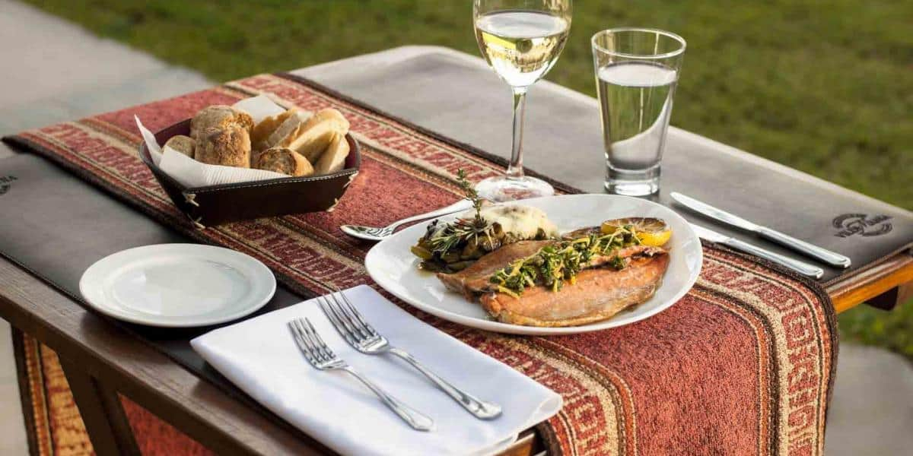
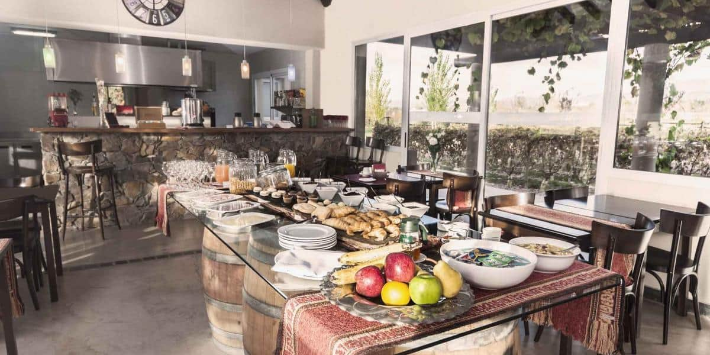
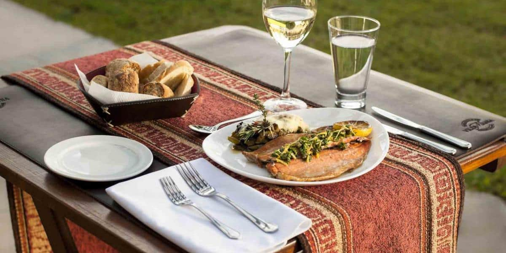
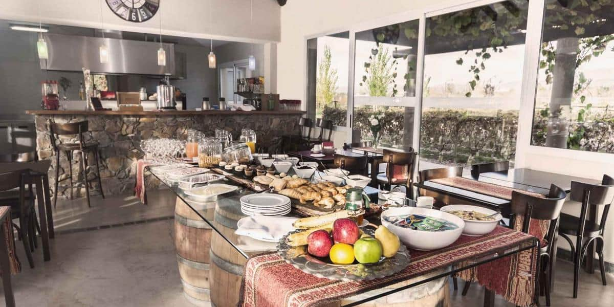

Carta
Entradas -Appetizer
- Ensalada de quinoa y kale, remolacha a la sal, cebolla acidulada, gremolata de berros - Quinoa and kale salad, beet with salt, acidic onions, watercress gremolata
- Antipasto estilo italiano, burrata fresca, prosciutto, tomate, palta y oliva - Italian style antipasto, fresh burrata, prosciutto, tomato, avocado and olive
Ensalada fresca del día - Fresh salad.
- Sopa de choclo y cardamomo, Zapallo asado - Corn and cardamom soup, roasted pumpkin
- Púlpito español salteado y papa confitada con pimentón ahumado - Sauteed Spanish pulpit and candied potato with smoked paprika
- Provoleta ahumada, chimichurri argentino y tomates secos - Smoked provoleta, argentine chimichurri and died tomatoes.
Principales –Main Courses
- de bife, ratatuille y pickles hechos en casa - Beef eye, ratatuille and pickles
- Abadejo, puré de zapallo con ajo negro, emulsión de zanahoria y sésamotostado - Haddock, pumpkin puree with black garlic and carrot and sesame emulsion.
- Conejo estofado en vino blanco con su fondo de cocción - Rabbit stewed in wine with its its own juices
- Filet Cordero, trigo Burgol y pepinillos en conserva - Lamb filet, Burgol wheat and canned pickles
- >Matambre de cerdo, duraznos, zucchini y Verdeo grillado, pesto de albahaca y limón - Grilled pork, peaches, zucchini and grilled Verdeo, basil and lemon pesto
- Hamburguesa casera, panceta, tomate, pepino y queso muzzarella, papas al horno - Homemade hamburger, bacon, tomato, cucumber and mozzarella cheese. bakedpotatoes
Clásicos de la cocina-Tradicional Courses
- Milanesa de peceto “la napolitana” y bastones de papa - Escalope with tomatoes sauce and cheese, and potatoes sticks
- Carne a la masa con bastones de papa - Meat pie with potatoes stick
- Humita mendocina y zapallo ingles al horno - Mendoza´s Corn paste with English pumpkin
Pastas
- Penne rigate, hongos, puerros, repollitos de bruselas y crema - Penne rigate, mushrooms, leeks, brussels sprouts and cream
- Ravioles de queso de cabra y pistachos, salsa de tomates asados y endivias - Ravioli with goat cheese and pistachios, cream based on rose wine and roasted endives
- Risotto de brócoli con queso ahumado, n´duja - Broccoli risotto with smoked cheese
- Linguini libre de gluten (salsa a elección de la carta) - Gluten free Linguini (sauce of your choice from the menú)
- Tagliatelle nero de sepia con langostinos - Tagliatelle nero of cuttlefish with prawns
Postres- Desserts
- Chocolate húmedo, confitura de frutos rojos y crema batida - >Chocolate, raspberry jam and whipped cream
- Cremas Heladas - Ice Creams
- Flan argentino con dulce de leche - Argentine flan with dulce de leche
- Quesos y dulces artesanales - Cheese and homemade jams
- Crumble de durazno quemado, frangipane y almibar de espacias - Cheese cake de Baileys y Dulce de Leche
Cava
Un lugar apacible, donde degustar las mejores etiquetas de Mendoza. Entre ellos los de nuestra propia cosecha de Malbec. Además degustaciones privadas con sommelier.
Tardes de Té
Pastelería tradicional hecha en casa - Variedad de Sándwiches en pan artesana - Jugo de naranja - Infusiones calientes - Brindis con espumante
Clases de Cocina
Disfrute de una distendida clase de cocina y aprenda los secretos de típicos platos argentinos.
U$D 95 por persona
Galeria


 




